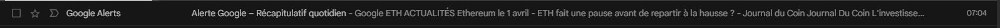
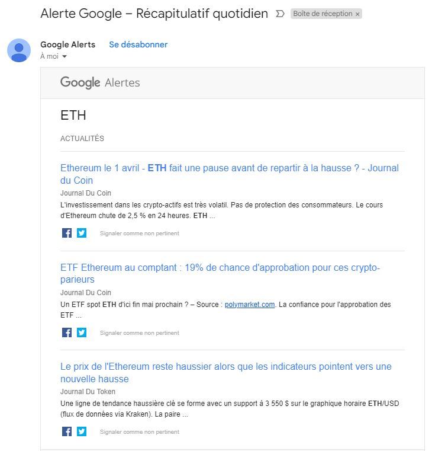
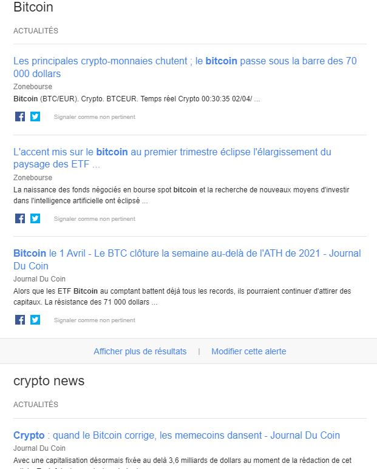

VEILLE TECHNOLOGIQUE ?
– Qu’est-ce que c’est :
La veille technologique est une activité qui consiste à se tenir au courant des avancées technologiques dans les domaines de l’informatique afin de tirer parti de ses avancés le plus rapidement possible.
– Les bon outils pour faire sa veille :
☛ Google Alerte (Push)☛ Les flux RSS (Push)
☛ Assister à des conférences (Pull)
– De quelle manière faire sa veille :
🢡 Identifier les objectifs 🎯
🢡 Identifier les bonnes sources d’informations ⛲️
🢡 Utiliser les bons outils de veille🚜
🢡 Trier et organiser les informations 🗃
🢡 Aménager ses créneaux de veille ⏰
🢡 Choisir le bon support 🤔.
– Utilité d’une veille
☛ Pour éviter de prendre des décisions sur des informations obsolètes
☛ Pour éviter de réinventer ce qui existe déjà
☛ Une façon d’augmenter nos compétences
Les cryptomonnaies
– Qu’est-ce que c’est :
Les cryptomonnaies sont des formes de monnaie numérique conçues pour fonctionner comme un moyen d'échange sécurisé en ligne. Contrairement aux monnaies traditionnelles comme l'euro ou le dollar, les cryptomonnaies ne sont pas émises ou régulées par un gouvernement central ou une institution financière. Au lieu de cela, elles reposent sur une technologie décentralisée appelée la blockchain.
– Qu’est-ce que la blockchain :
La blockchain est essentiellement un registre numérique distribué et sécurisé qui enregistre toutes les transactions effectuées avec une cryptomonnaie particulière. Cette technologie utilise des techniques de cryptographie avancées pour garantir la sécurité et la transparence des transactions.
– Comment sont-elles crées ?
Les cryptomonnaies sont créées à travers un processus appelé "minage". Le minage est le processus de validation et de sécurisation des transactions effectuées avec une cryptomonnaie en utilisant la puissance de calcul des ordinateurs. Les mineurs résolvent des problèmes mathématiques complexes pour vérifier les transactions et les ajouter à la blockchain. En récompense de leur travail, les mineurs reçoivent généralement une certaine quantité de la cryptomonnaie en question.
Le Bitcoin
☛ Google Alerte (Push)
 
☛ Les flux RSS (Push)
Accédez à ma veille technologique
☛ Assister à des conférences (Pull)
J'ai eu l'occasion d'assister a plusieurs conférences gratuite et payante sur Teams, discord ou encore sur des sites internet spécialisé dans le domaine de la cryptomonnaie